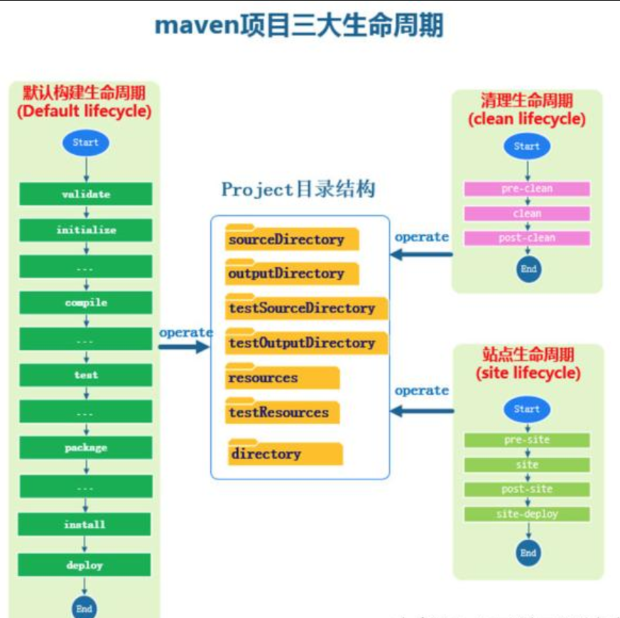
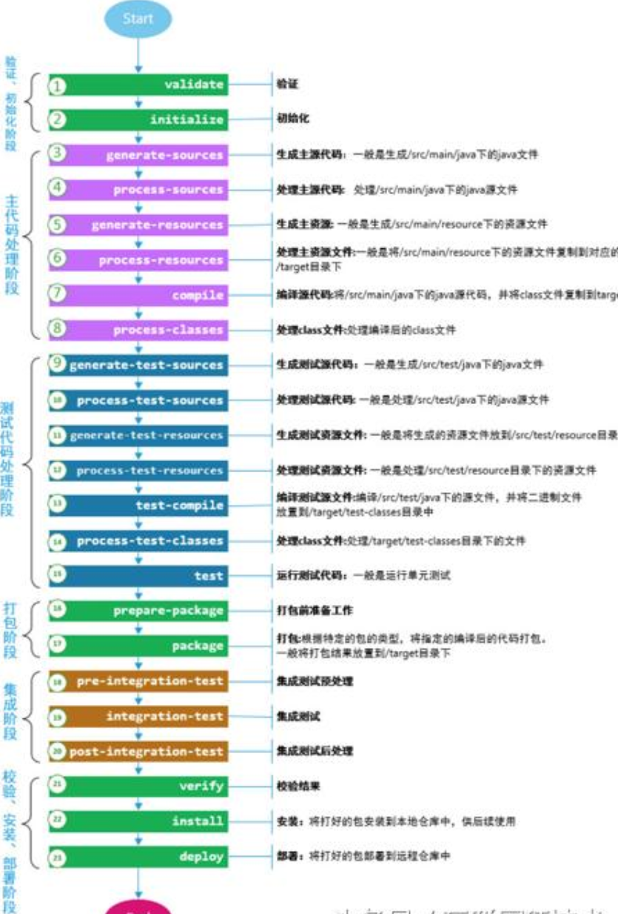
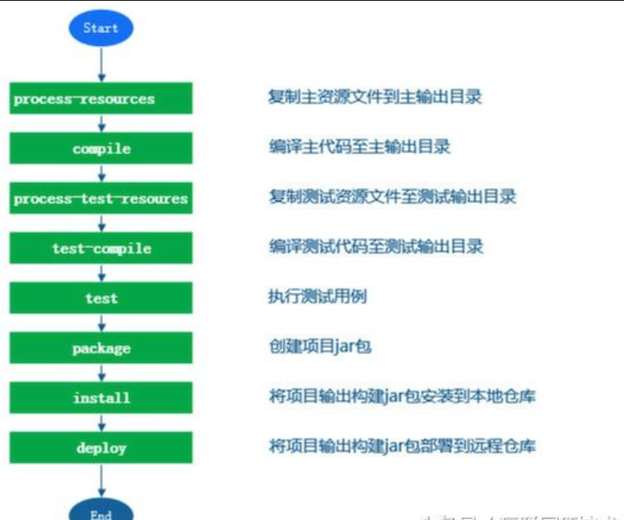

Maven的三大生命周期
本文于344天之前发表，文中内容可能已经过时。
三类生命周期简介：
maven从项目的三个不同的角度，定义了三大生命周期，三大生命周期是相互独立的，它们之间不会相互影响。
1）默认构建生命周期（Default Lifeclyle）:
该生命周期表示这项目的构建过程，定义了一个项目的构建要经过的不同的阶段。
2）清理生命周期(Clean Lifecycle):
该生命周期负责清理项目中的多余信息，保持项目资源和代码的整洁性。一般拿来清空directory(即一般的target)目录下的文件。
3）站点管理生命周期(Site Lifecycle) :
站点周期：用来介绍项目的信息，如项目介绍，项目进度状态、项目组成成员，版本控制信息，项目javadoc索引信息等等。站点管理生命周期定义了站点管理过程的各个阶段。
三大生命周期图形表示：

项目中应用Maven必懂的过程：23个过程、8个项目实战阶段详解
默认构建生命周期（Default Lifeclyle）
1）该周期把将一个项目抽象成了23个阶段。
它的每一个阶段应该干什么事情由用户决定。即：maven为每一个阶段设计了接口，你可以为每一阶段自己定义一个接口，进而实现对应阶段应该有的行为。23个阶段简介如下图：

项目中应用Maven必懂的过程：23个过程、8个项目实战阶段详解
2）默认生命周期最常用的8个过程阶段：
在实际的项目开发过程中， 并不是所有的生命周期阶段都是必须的，大家关心的项目生命周期阶段仅仅是以下8个常用的而已。

项目中应用Maven必懂的过程：23个过程、8个项目实战阶段详解
具体介绍如下：
应该将resource资源文件准备好，放到指定的target目录下—-process-resources 阶段
将java源文件编译成.class文件，然后将class 文件放置到对应的target目录下—-compile阶段；
将test类型的resource移动到指定的 target目录下——process-test-resource阶段；
将test类型的java 源文件编译成class文件，然后放置到指定的target目录下——test-compile阶段；
运行test测试用例——-test阶段；
将compile阶段编译的class文件和resource资源打包成jar包或war包——–package阶段；
将生成的包安装到本地仓库中——install阶段
将生成的包部署到远程仓库中—–deploy阶段
清理生命周期(Clean Lifecycle):
该生命周期负责清理项目中的多余信息，保持项目资源和代码的整洁性。一般拿来清空directory
(即一般的target)目录下的文件。
当我们执行命令 mvn clean 命令后，Maven 调用清洁的生命周期由以下几个阶段组成：
pre-clean
clean
post-clean
站点管理生命周期(Site Lifecycle) :
Maven的网站插件通常用于创建新的文档，创建报告，部署网站等。
阶段
pre-site
site
post-site
site-deploy
 支付宝打赏
支付宝打赏
 微信打赏
微信打赏
如果文章对你有帮助，欢迎点击上方按钮打赏作者